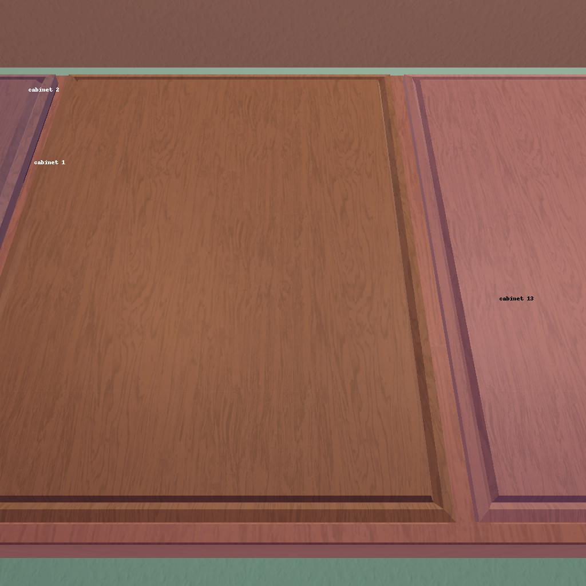

---------------------------------------------------------task: 22---------------------------------------------------------
--------------------------------------------------------------------------------------------------------------------------------------------------------------------
--------------------------------------------------------------------------------------------------------------------------------------------------------------------
Step:--------------------------------------------------------------------------17-------------------------------------------------------------------------------
----------------------------------------
VLM Prompt:
Image1:
Image2:
**Instruction**
1. Analyze the provided image to identify all visible household objects, focusing on those relevant to the task description "put a hot egg in countertop."
2. Use the analysis of the image and the task hint "The agent must find an object of the desired type, pick it up, go to a microwave, heat the object with the microwave, then find the correct location to place it, and put it down there. The agent does not need to use the microwave button or open the microwave to heat the object, and the agent just needs to do action that is "heat the object with the microwave"." to answer the question: what is the most reasonable action in the choices for the task description "put a hot egg in countertop"?
4. Decide and write the answer using the template: The answer is: (i): , where i is the real number. If there is no desired object in the image, search every place based on **Initial Observation** to find the object. And if no one is exactly correct, choose a similar answer.
**Initial Observation**
You are in the middle of a room. Looking quickly around you, you can see cabinet (1-18), countertop (1-4), sink (1), drawer (1-7), sinkbasin (1), coffeemachine (1), microwave (1), garbagecan (1), stoveburner (1-4), toaster (1), fridge (1)
**Answer Choices**
(1): go to countertop 1
(2): go to cabinet 3
(3): go to cabinet 4
(4): go to cabinet 5
(5): go to sink 1
(6): go to cabinet 6
(7): go to drawer 1
(8): go to drawer 2
(9): go to sinkbasin 1
(10): go to cabinet 7
(11): go to cabinet 8
(12): go to coffeemachine 1
(13): go to microwave 1
(14): go to cabinet 9
(15): go to countertop 2
(16): go to cabinet 10
(17): go to drawer 3
(18): go to drawer 4
(19): go to garbagecan 1
(20): go to drawer 5
(21): go to cabinet 11
(22): go to cabinet 12
(23): go to cabinet 13
(24): go to cabinet 14
(25): go to stoveburner 1
(26): go to countertop 3
(27): go to stoveburner 2
(28): go to stoveburner 3
(29): go to stoveburner 4
(30): go to drawer 6
(31): go to cabinet 15
(32): go to cabinet 16
(33): go to cabinet 17
(34): go to cabinet 18
(35): go to toaster 1
(36): go to drawer 7
(37): go to countertop 4
(38): go to fridge 1
(39): open cabinet 2
(40): close cabinet 2
(41): examine cabinet 2
**Answer**
Let's think step by step by following the instructions.
----------------------------------------
----------------------------------------
Original Response:
Firstly, the task requires to "put a hot egg in countertop." To accomplish this, the agent must first find an egg, which is likely to be stored in a cabinet or the fridge. After acquiring the egg, the agent must heat it with the microwave, according to the task hint provided.
Looking at the images, we do not see any eggs or microwaves. However, based on the initial observation, we know there is a microwave in the room. Since the agent does not need to interact with the microwave buttons or open it, the most reasonable action would be to go to the microwave to "heat the object."
After heating the egg, the agent is supposed to place it on a countertop. There are four countertops mentioned in the initial observation, and since we do not have information on which countertop to use, any of them could be considered correct for the final placement of the hot egg.
Therefore, the first step is to find and heat the egg, which leads to the action related to the microwave. The answer is: (13): go to microwave 1. After this step, the agent would proceed to any of the countertops (1, 2, 3, or 4) to complete the task.
----------------------------------------
----------------------------------------
>>> Refine Original VLM Response and Get Pure Action: go to microwave 1
----------------------------------------
-----------------------------------------------------------------
Running time: 12.719884872436523 seconds
Total Money: 11.077260000000004
-----------------------------------------------------------------
-----------------------------------------------------------------
Text Observation:You arrive at loc 14. The microwave 1 is closed.
-----------------------------------------------------------------
UNSUCCEED